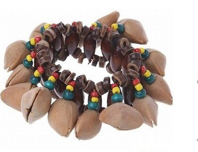
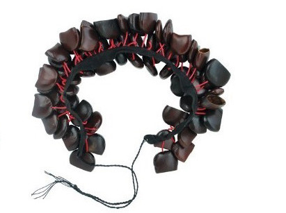
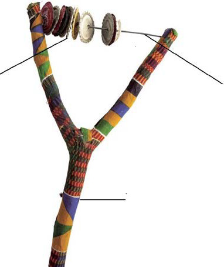

Njuga
Figure 4: Percussion instruments
Some percussion instruments can be produced using simple materials in our surroundings. For example, you can produce manyanga from a tree twig, string or wire and soda caps as shown in Figure 5.

Soda caps
Wire
A tree twig
Figure 5: Percussion instrument